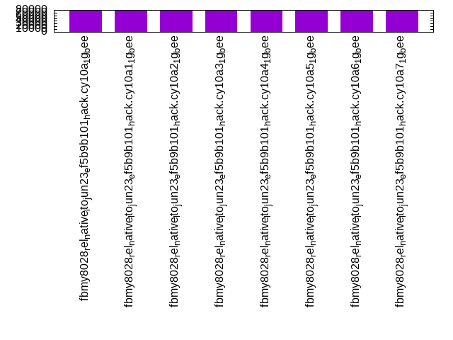
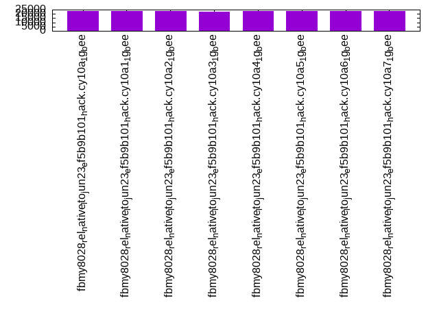

Introduction
This is a report for the insert benchmark with 20M docs and 1 client(s). It is generated by scripts (bash, awk, sed) and Tufte might not be impressed. An overview of the insert benchmark is here and a short update is here. Below, by DBMS, I mean DBMS+version.config. An example is my8020.c10b40 where my means MySQL, 8020 is version 8.0.20 and c10b40 is the name for the configuration file.
The test server has 8 AMD cores, 16G RAM and an NVMe SSD. It is described here as the Beelink. The benchmark was run with 1 client and there were 1 or 3 connections per client (1 for queries or inserts without rate limits, 1+1 for rate limited inserts+deletes). It uses 1 table. It loads 20M rows per table without secondary indexes, creates secondary indexes, then inserts 100M rows per table with a delete per insert to avoid growing the table. It then does 3 read+write tests for 3600s each that do queries as fast as possible with 100, 500 and then 1000 inserts/second/client concurrent with the queries and 1000 deletes/second to avoid growing the table. The database is cached by the OS but not by the storage engine. Clients and the DBMS share one server. The per-database configs are in the per-database subdirectories here.
The tested DBMS are:
- fbmy8028_rel_native_lto_jun23_ef5b9b101_hack.cy10a_1g_bee - MyRocks 8.0.28 at git hash ef5b9b101 from June 2023, rel_native_lto build, cy10a_1g_bee config
- fbmy8028_rel_native_lto_jun23_ef5b9b101_hack.cy10a1_1g_bee - MyRocks 8.0.28 at git hash ef5b9b101 from June 2023, rel_native_lto build, cy10a1_1g_bee config, adds rocksdb_use_hyper_clock_cache=ON
- fbmy8028_rel_native_lto_jun23_ef5b9b101_hack.cy10a2_1g_bee - MyRocks 8.0.28 at git hash ef5b9b101 from June 2023, rel_native_lto build, cy10a2_1g_bee config, adds rocksdb_block_cache_numshardbits=3
- fbmy8028_rel_native_lto_jun23_ef5b9b101_hack.cy10a3_1g_bee - MyRocks 8.0.28 at git hash ef5b9b101 from June 2023, rel_native_lto build, cy10a3_1g_bee config, disables intra-L0 compaction via hack
- fbmy8028_rel_native_lto_jun23_ef5b9b101_hack.cy10a4_1g_bee - MyRocks 8.0.28 at git hash ef5b9b101 from June 2023, rel_native_lto build, cy10a4_1g_bee config, reduces level0_slowdown_writes_trigger from 20 to 8 and level0_stop_writes_trigger from 36 to 12
- fbmy8028_rel_native_lto_jun23_ef5b9b101_hack.cy10a5_1g_bee - MyRocks 8.0.28 at git hash ef5b9b101 from June 2023, rel_native_lto build, cy10a5_1g_bee config, adds rocksdb_max_subcompactions=5
- fbmy8028_rel_native_lto_jun23_ef5b9b101_hack.cy10a6_1g_bee - MyRocks 8.0.28 at git hash ef5b9b101 from June 2023, rel_native_lto build, cy10a6_1g_bee config, combines a1, a2, a5
- fbmy8028_rel_native_lto_jun23_ef5b9b101_hack.cy10a7_1g_bee - MyRocks 8.0.28 at git hash ef5b9b101 from June 2023, rel_native_lto build, cy10a7_1g_bee config, combines a1, a5
Contents
- Summary
- l.i0: load without secondary indexes
- l.x: create secondary indexes
- l.i1: continue load after secondary indexes created
- q100.1: range queries with 100 insert/s per client
- q500.1: range queries with 500 insert/s per client
- q1000.1: range queries with 1000 insert/s per client
Summary
The numbers are inserts/s for l.i0 and l.i1, indexed docs (or rows) /s for l.x and queries/s for q*.2. The values are the average rate over the entire test for inserts (IPS) and queries (QPS). The range of values for IPS and QPS is split into 3 parts: bottom 25%, middle 50%, top 25%. Values in the bottom 25% have a red background, values in the top 25% have a green background and values in the middle have no color. A gray background is used for values that can be ignored because the DBMS did not sustain the target insert rate. Red backgrounds are not used when the minimum value is within 80% of the max value.
| dbms | l.i0 | l.x | l.i1 | q100.1 | q500.1 | q1000.1 |
|---|---|---|---|---|---|---|
| fbmy8028_rel_native_lto_jun23_ef5b9b101_hack.cy10a_1g_bee | 61350 | 76426 | 23502 | 2550 | 2370 | 2411 |
| fbmy8028_rel_native_lto_jun23_ef5b9b101_hack.cy10a1_1g_bee | 60606 | 77606 | 23596 | 2484 | 2485 | 2453 |
| fbmy8028_rel_native_lto_jun23_ef5b9b101_hack.cy10a2_1g_bee | 61162 | 76718 | 23403 | 2465 | 2399 | 2405 |
| fbmy8028_rel_native_lto_jun23_ef5b9b101_hack.cy10a3_1g_bee | 60241 | 76718 | 22946 | 2434 | 2412 | 2383 |
| fbmy8028_rel_native_lto_jun23_ef5b9b101_hack.cy10a4_1g_bee | 61162 | 77308 | 23719 | 2447 | 2401 | 2408 |
| fbmy8028_rel_native_lto_jun23_ef5b9b101_hack.cy10a5_1g_bee | 61728 | 76718 | 23585 | 2466 | 2416 | 2371 |
| fbmy8028_rel_native_lto_jun23_ef5b9b101_hack.cy10a6_1g_bee | 61162 | 77308 | 23529 | 2477 | 2451 | 2468 |
| fbmy8028_rel_native_lto_jun23_ef5b9b101_hack.cy10a7_1g_bee | 61162 | 77308 | 23579 | 2503 | 2427 | 2424 |
This table has relative throughput, throughput for the DBMS relative to the DBMS in the first line, using the absolute throughput from the previous table. Values less than 0.95 have a yellow background. Values greater than 1.05 have a blue background.
| dbms | l.i0 | l.x | l.i1 | q100.1 | q500.1 | q1000.1 |
|---|---|---|---|---|---|---|
| fbmy8028_rel_native_lto_jun23_ef5b9b101_hack.cy10a_1g_bee | 1.00 | 1.00 | 1.00 | 1.00 | 1.00 | 1.00 |
| fbmy8028_rel_native_lto_jun23_ef5b9b101_hack.cy10a1_1g_bee | 0.99 | 1.02 | 1.00 | 0.97 | 1.05 | 1.02 |
| fbmy8028_rel_native_lto_jun23_ef5b9b101_hack.cy10a2_1g_bee | 1.00 | 1.00 | 1.00 | 0.97 | 1.01 | 1.00 |
| fbmy8028_rel_native_lto_jun23_ef5b9b101_hack.cy10a3_1g_bee | 0.98 | 1.00 | 0.98 | 0.95 | 1.02 | 0.99 |
| fbmy8028_rel_native_lto_jun23_ef5b9b101_hack.cy10a4_1g_bee | 1.00 | 1.01 | 1.01 | 0.96 | 1.01 | 1.00 |
| fbmy8028_rel_native_lto_jun23_ef5b9b101_hack.cy10a5_1g_bee | 1.01 | 1.00 | 1.00 | 0.97 | 1.02 | 0.98 |
| fbmy8028_rel_native_lto_jun23_ef5b9b101_hack.cy10a6_1g_bee | 1.00 | 1.01 | 1.00 | 0.97 | 1.03 | 1.02 |
| fbmy8028_rel_native_lto_jun23_ef5b9b101_hack.cy10a7_1g_bee | 1.00 | 1.01 | 1.00 | 0.98 | 1.02 | 1.01 |
This lists the average rate of inserts/s for the tests that do inserts concurrent with queries. For such tests the query rate is listed in the table above. The read+write tests are setup so that the insert rate should match the target rate every second. Cells that are not at least 95% of the target have a red background to indicate a failure to satisfy the target.
| dbms | q100.1 | q500.1 | q1000.1 |
|---|---|---|---|
| fbmy8028_rel_native_lto_jun23_ef5b9b101_hack.cy10a_1g_bee | 100 | 499 | 998 |
| fbmy8028_rel_native_lto_jun23_ef5b9b101_hack.cy10a1_1g_bee | 100 | 499 | 997 |
| fbmy8028_rel_native_lto_jun23_ef5b9b101_hack.cy10a2_1g_bee | 100 | 499 | 998 |
| fbmy8028_rel_native_lto_jun23_ef5b9b101_hack.cy10a3_1g_bee | 100 | 499 | 998 |
| fbmy8028_rel_native_lto_jun23_ef5b9b101_hack.cy10a4_1g_bee | 100 | 499 | 998 |
| fbmy8028_rel_native_lto_jun23_ef5b9b101_hack.cy10a5_1g_bee | 100 | 499 | 998 |
| fbmy8028_rel_native_lto_jun23_ef5b9b101_hack.cy10a6_1g_bee | 100 | 499 | 998 |
| fbmy8028_rel_native_lto_jun23_ef5b9b101_hack.cy10a7_1g_bee | 100 | 499 | 998 |
| target | 100 | 500 | 1000 |
l.i0
l.i0: load without secondary indexes. Graphs for performance per 1-second interval are here.
Average throughput:
Insert response time histogram: each cell has the percentage of responses that take <= the time in the header and max is the max response time in seconds. For the max column values in the top 25% of the range have a red background and in the bottom 25% of the range have a green background. The red background is not used when the min value is within 80% of the max value.
| dbms | 256us | 1ms | 4ms | 16ms | 64ms | 256ms | 1s | 4s | 16s | gt | max |
|---|---|---|---|---|---|---|---|---|---|---|---|
| fbmy8028_rel_native_lto_jun23_ef5b9b101_hack.cy10a_1g_bee | 99.734 | 0.188 | 0.074 | 0.003 | 0.104 | ||||||
| fbmy8028_rel_native_lto_jun23_ef5b9b101_hack.cy10a1_1g_bee | 99.731 | 0.190 | 0.075 | 0.003 | 0.096 | ||||||
| fbmy8028_rel_native_lto_jun23_ef5b9b101_hack.cy10a2_1g_bee | 99.734 | 0.191 | 0.072 | 0.003 | 0.101 | ||||||
| fbmy8028_rel_native_lto_jun23_ef5b9b101_hack.cy10a3_1g_bee | 99.731 | 0.194 | 0.074 | 0.002 | 0.098 | ||||||
| fbmy8028_rel_native_lto_jun23_ef5b9b101_hack.cy10a4_1g_bee | 99.733 | 0.187 | 0.077 | 0.003 | 0.110 | ||||||
| fbmy8028_rel_native_lto_jun23_ef5b9b101_hack.cy10a5_1g_bee | 99.734 | 0.183 | 0.080 | 0.003 | 0.084 | ||||||
| fbmy8028_rel_native_lto_jun23_ef5b9b101_hack.cy10a6_1g_bee | 99.732 | 0.193 | 0.072 | 0.003 | 0.095 | ||||||
| fbmy8028_rel_native_lto_jun23_ef5b9b101_hack.cy10a7_1g_bee | 99.734 | 0.189 | 0.074 | 0.003 | 0.082 |
Performance metrics for the DBMS listed above. Some are normalized by throughput, others are not. Legend for results is here.
ips qps rps rmbps wps wmbps rpq rkbpq wpi wkbpi csps cpups cspq cpupq dbgb1 dbgb2 rss maxop p50 p99 tag 61350 0 0 0.0 36.8 12.0 0.000 0.000 0.001 0.200 6363 22.4 0.104 29 0.7 1.9 0.6 0.104 61732 53039 20m.fbmy8028_rel_native_lto_jun23_ef5b9b101_hack.cy10a_1g_bee 60606 0 0 0.0 36.7 11.8 0.000 0.000 0.001 0.199 6269 21.9 0.103 29 0.7 1.9 0.6 0.096 60831 52640 20m.fbmy8028_rel_native_lto_jun23_ef5b9b101_hack.cy10a1_1g_bee 61162 0 0 0.0 37.3 12.0 0.000 0.000 0.001 0.201 6333 22.3 0.104 29 0.7 1.9 0.6 0.101 61629 53139 20m.fbmy8028_rel_native_lto_jun23_ef5b9b101_hack.cy10a2_1g_bee 60241 0 0 0.0 37.2 11.8 0.000 0.000 0.001 0.201 6257 22.3 0.104 30 0.7 1.9 0.6 0.098 60629 53140 20m.fbmy8028_rel_native_lto_jun23_ef5b9b101_hack.cy10a3_1g_bee 61162 0 0 0.0 37.2 11.8 0.000 0.000 0.001 0.198 6319 22.0 0.103 29 0.7 1.9 0.6 0.110 61230 54041 20m.fbmy8028_rel_native_lto_jun23_ef5b9b101_hack.cy10a4_1g_bee 61728 0 0 0.0 37.8 12.0 0.000 0.000 0.001 0.199 6388 22.6 0.103 29 0.7 1.9 0.6 0.084 62145 55636 20m.fbmy8028_rel_native_lto_jun23_ef5b9b101_hack.cy10a5_1g_bee 61162 0 0 0.0 37.8 12.0 0.000 0.000 0.001 0.201 6340 22.1 0.104 29 0.7 1.9 0.6 0.095 61632 54738 20m.fbmy8028_rel_native_lto_jun23_ef5b9b101_hack.cy10a6_1g_bee 61162 0 0 0.0 37.6 11.9 0.000 0.000 0.001 0.199 6342 22.1 0.104 29 0.7 1.9 0.6 0.082 61456 55437 20m.fbmy8028_rel_native_lto_jun23_ef5b9b101_hack.cy10a7_1g_bee
l.x
l.x: create secondary indexes.
Average throughput:
Performance metrics for the DBMS listed above. Some are normalized by throughput, others are not. Legend for results is here.
ips qps rps rmbps wps wmbps rpq rkbpq wpi wkbpi csps cpups cspq cpupq dbgb1 dbgb2 rss maxop p50 p99 tag 76426 0 0 0.0 29.4 11.6 0.000 0.000 0.000 0.155 437 12.0 0.006 13 1.4 2.7 1.9 0.009 NA NA 20m.fbmy8028_rel_native_lto_jun23_ef5b9b101_hack.cy10a_1g_bee 77606 0 0 0.0 30.0 11.8 0.000 0.000 0.000 0.156 414 11.9 0.005 12 1.4 2.7 1.9 0.017 NA NA 20m.fbmy8028_rel_native_lto_jun23_ef5b9b101_hack.cy10a1_1g_bee 76718 0 0 0.0 29.7 11.7 0.000 0.000 0.000 0.156 416 11.8 0.005 12 1.4 2.7 1.9 0.012 NA NA 20m.fbmy8028_rel_native_lto_jun23_ef5b9b101_hack.cy10a2_1g_bee 76718 0 0 0.0 30.3 11.7 0.000 0.000 0.000 0.156 389 11.9 0.005 12 1.4 2.7 1.9 0.017 NA NA 20m.fbmy8028_rel_native_lto_jun23_ef5b9b101_hack.cy10a3_1g_bee 77308 0 0 0.0 30.6 11.8 0.000 0.000 0.000 0.156 426 11.8 0.006 12 1.4 2.7 1.8 0.017 NA NA 20m.fbmy8028_rel_native_lto_jun23_ef5b9b101_hack.cy10a4_1g_bee 76718 0 0 0.0 29.9 11.7 0.000 0.000 0.000 0.156 429 11.9 0.006 12 1.4 2.7 1.9 0.012 NA NA 20m.fbmy8028_rel_native_lto_jun23_ef5b9b101_hack.cy10a5_1g_bee 77308 0 0 0.0 30.3 11.8 0.000 0.000 0.000 0.156 438 11.9 0.006 12 1.4 2.7 1.9 0.009 NA NA 20m.fbmy8028_rel_native_lto_jun23_ef5b9b101_hack.cy10a6_1g_bee 77308 0 0 0.0 29.7 11.7 0.000 0.000 0.000 0.155 406 11.9 0.005 12 1.4 2.7 1.9 0.008 NA NA 20m.fbmy8028_rel_native_lto_jun23_ef5b9b101_hack.cy10a7_1g_bee
l.i1
l.i1: continue load after secondary indexes created. Graphs for performance per 1-second interval are here.
Average throughput:
Insert response time histogram: each cell has the percentage of responses that take <= the time in the header and max is the max response time in seconds. For the max column values in the top 25% of the range have a red background and in the bottom 25% of the range have a green background. The red background is not used when the min value is within 80% of the max value.
| dbms | 256us | 1ms | 4ms | 16ms | 64ms | 256ms | 1s | 4s | 16s | gt | max |
|---|---|---|---|---|---|---|---|---|---|---|---|
| fbmy8028_rel_native_lto_jun23_ef5b9b101_hack.cy10a_1g_bee | 99.678 | 0.245 | 0.073 | 0.004 | 0.117 | ||||||
| fbmy8028_rel_native_lto_jun23_ef5b9b101_hack.cy10a1_1g_bee | 99.678 | 0.244 | 0.074 | 0.004 | 0.129 | ||||||
| fbmy8028_rel_native_lto_jun23_ef5b9b101_hack.cy10a2_1g_bee | 99.677 | 0.248 | 0.072 | 0.004 | 0.117 | ||||||
| fbmy8028_rel_native_lto_jun23_ef5b9b101_hack.cy10a3_1g_bee | 99.673 | 0.251 | 0.073 | 0.004 | 0.128 | ||||||
| fbmy8028_rel_native_lto_jun23_ef5b9b101_hack.cy10a4_1g_bee | 99.676 | 0.250 | 0.070 | 0.003 | 0.131 | ||||||
| fbmy8028_rel_native_lto_jun23_ef5b9b101_hack.cy10a5_1g_bee | 99.679 | 0.244 | 0.073 | 0.003 | 0.178 | ||||||
| fbmy8028_rel_native_lto_jun23_ef5b9b101_hack.cy10a6_1g_bee | 99.677 | 0.247 | 0.072 | 0.003 | 0.107 | ||||||
| fbmy8028_rel_native_lto_jun23_ef5b9b101_hack.cy10a7_1g_bee | 99.677 | 0.246 | 0.074 | 0.003 | 0.104 |
Delete response time histogram: each cell has the percentage of responses that take <= the time in the header and max is the max response time in seconds. For the max column values in the top 25% of the range have a red background and in the bottom 25% of the range have a green background. The red background is not used when the min value is within 80% of the max value.
| dbms | 256us | 1ms | 4ms | 16ms | 64ms | 256ms | 1s | 4s | 16s | gt | max |
|---|---|---|---|---|---|---|---|---|---|---|---|
| fbmy8028_rel_native_lto_jun23_ef5b9b101_hack.cy10a_1g_bee | 99.674 | 0.245 | 0.078 | 0.004 | 0.127 | ||||||
| fbmy8028_rel_native_lto_jun23_ef5b9b101_hack.cy10a1_1g_bee | 99.675 | 0.243 | 0.078 | 0.004 | 0.115 | ||||||
| fbmy8028_rel_native_lto_jun23_ef5b9b101_hack.cy10a2_1g_bee | 99.672 | 0.248 | 0.077 | 0.004 | 0.112 | ||||||
| fbmy8028_rel_native_lto_jun23_ef5b9b101_hack.cy10a3_1g_bee | 99.669 | 0.248 | 0.079 | 0.004 | 0.136 | ||||||
| fbmy8028_rel_native_lto_jun23_ef5b9b101_hack.cy10a4_1g_bee | 99.672 | 0.250 | 0.075 | 0.003 | 0.118 | ||||||
| fbmy8028_rel_native_lto_jun23_ef5b9b101_hack.cy10a5_1g_bee | 99.673 | 0.245 | 0.078 | 0.003 | 0.191 | ||||||
| fbmy8028_rel_native_lto_jun23_ef5b9b101_hack.cy10a6_1g_bee | 99.672 | 0.247 | 0.078 | 0.003 | 0.105 | ||||||
| fbmy8028_rel_native_lto_jun23_ef5b9b101_hack.cy10a7_1g_bee | 99.674 | 0.245 | 0.078 | 0.003 | 0.113 |
Performance metrics for the DBMS listed above. Some are normalized by throughput, others are not. Legend for results is here.
ips qps rps rmbps wps wmbps rpq rkbpq wpi wkbpi csps cpups cspq cpupq dbgb1 dbgb2 rss maxop p50 p99 tag 23502 0 2 0.2 96.2 35.6 0.000 0.009 0.004 1.552 10143 43.6 0.432 148 2.4 3.1 1.7 0.117 23474 20777 20m.fbmy8028_rel_native_lto_jun23_ef5b9b101_hack.cy10a_1g_bee 23596 0 2 0.2 98.1 35.7 0.000 0.009 0.004 1.550 10205 43.5 0.432 147 2.3 3.0 1.8 0.129 23573 20777 20m.fbmy8028_rel_native_lto_jun23_ef5b9b101_hack.cy10a1_1g_bee 23403 0 2 0.2 98.5 35.9 0.000 0.008 0.004 1.570 10155 43.6 0.434 149 2.9 3.6 1.8 0.117 23374 20726 20m.fbmy8028_rel_native_lto_jun23_ef5b9b101_hack.cy10a2_1g_bee 22946 0 1 0.2 94.7 34.9 0.000 0.008 0.004 1.555 9923 42.4 0.432 148 2.5 3.2 1.7 0.128 22924 20277 20m.fbmy8028_rel_native_lto_jun23_ef5b9b101_hack.cy10a3_1g_bee 23719 0 3 0.2 99.8 36.4 0.000 0.010 0.004 1.573 10239 44.1 0.432 149 1.9 2.6 1.8 0.131 23723 20877 20m.fbmy8028_rel_native_lto_jun23_ef5b9b101_hack.cy10a4_1g_bee 23585 0 2 0.2 96.9 35.5 0.000 0.009 0.004 1.540 10171 43.3 0.431 147 2.4 3.1 1.8 0.178 23524 21126 20m.fbmy8028_rel_native_lto_jun23_ef5b9b101_hack.cy10a5_1g_bee 23529 0 2 0.2 96.6 35.7 0.000 0.010 0.004 1.552 10152 43.5 0.431 148 2.0 2.7 1.8 0.107 23474 20827 20m.fbmy8028_rel_native_lto_jun23_ef5b9b101_hack.cy10a6_1g_bee 23579 0 2 0.2 96.7 35.5 0.000 0.010 0.004 1.541 10171 43.4 0.431 147 2.3 3.0 1.8 0.104 23524 21026 20m.fbmy8028_rel_native_lto_jun23_ef5b9b101_hack.cy10a7_1g_bee
q100.1
q100.1: range queries with 100 insert/s per client. Graphs for performance per 1-second interval are here.
Average throughput:
Query response time histogram: each cell has the percentage of responses that take <= the time in the header and max is the max response time in seconds. For max values in the top 25% of the range have a red background and in the bottom 25% of the range have a green background. The red background is not used when the min value is within 80% of the max value.
| dbms | 256us | 1ms | 4ms | 16ms | 64ms | 256ms | 1s | 4s | 16s | gt | max |
|---|---|---|---|---|---|---|---|---|---|---|---|
| fbmy8028_rel_native_lto_jun23_ef5b9b101_hack.cy10a_1g_bee | 4.006 | 95.993 | 0.001 | 0.003 | |||||||
| fbmy8028_rel_native_lto_jun23_ef5b9b101_hack.cy10a1_1g_bee | 3.245 | 96.754 | 0.001 | 0.003 | |||||||
| fbmy8028_rel_native_lto_jun23_ef5b9b101_hack.cy10a2_1g_bee | 2.387 | 97.612 | 0.001 | 0.003 | |||||||
| fbmy8028_rel_native_lto_jun23_ef5b9b101_hack.cy10a3_1g_bee | 2.203 | 97.796 | 0.001 | 0.003 | |||||||
| fbmy8028_rel_native_lto_jun23_ef5b9b101_hack.cy10a4_1g_bee | 2.822 | 97.178 | 0.001 | 0.003 | |||||||
| fbmy8028_rel_native_lto_jun23_ef5b9b101_hack.cy10a5_1g_bee | 3.100 | 96.899 | 0.001 | 0.003 | |||||||
| fbmy8028_rel_native_lto_jun23_ef5b9b101_hack.cy10a6_1g_bee | 2.987 | 97.012 | 0.001 | 0.003 | |||||||
| fbmy8028_rel_native_lto_jun23_ef5b9b101_hack.cy10a7_1g_bee | 3.184 | 96.814 | 0.001 | 0.003 |
Insert response time histogram: each cell has the percentage of responses that take <= the time in the header and max is the max response time in seconds. For max values in the top 25% of the range have a red background and in the bottom 25% of the range have a green background. The red background is not used when the min value is within 80% of the max value.
| dbms | 256us | 1ms | 4ms | 16ms | 64ms | 256ms | 1s | 4s | 16s | gt | max |
|---|---|---|---|---|---|---|---|---|---|---|---|
| fbmy8028_rel_native_lto_jun23_ef5b9b101_hack.cy10a_1g_bee | 99.431 | 0.514 | 0.056 | 0.023 | |||||||
| fbmy8028_rel_native_lto_jun23_ef5b9b101_hack.cy10a1_1g_bee | 99.389 | 0.514 | 0.097 | 0.023 | |||||||
| fbmy8028_rel_native_lto_jun23_ef5b9b101_hack.cy10a2_1g_bee | 99.333 | 0.583 | 0.083 | 0.023 | |||||||
| fbmy8028_rel_native_lto_jun23_ef5b9b101_hack.cy10a3_1g_bee | 99.306 | 0.611 | 0.083 | 0.023 | |||||||
| fbmy8028_rel_native_lto_jun23_ef5b9b101_hack.cy10a4_1g_bee | 99.417 | 0.514 | 0.069 | 0.018 | |||||||
| fbmy8028_rel_native_lto_jun23_ef5b9b101_hack.cy10a5_1g_bee | 99.333 | 0.597 | 0.069 | 0.018 | |||||||
| fbmy8028_rel_native_lto_jun23_ef5b9b101_hack.cy10a6_1g_bee | 99.278 | 0.653 | 0.069 | 0.023 | |||||||
| fbmy8028_rel_native_lto_jun23_ef5b9b101_hack.cy10a7_1g_bee | 99.389 | 0.542 | 0.069 | 0.023 |
Delete response time histogram: each cell has the percentage of responses that take <= the time in the header and max is the max response time in seconds. For max values in the top 25% of the range have a red background and in the bottom 25% of the range have a green background. The red background is not used when the min value is within 80% of the max value.
| dbms | 256us | 1ms | 4ms | 16ms | 64ms | 256ms | 1s | 4s | 16s | gt | max |
|---|---|---|---|---|---|---|---|---|---|---|---|
| fbmy8028_rel_native_lto_jun23_ef5b9b101_hack.cy10a_1g_bee | 99.486 | 0.486 | 0.028 | 0.023 | |||||||
| fbmy8028_rel_native_lto_jun23_ef5b9b101_hack.cy10a1_1g_bee | 99.431 | 0.500 | 0.069 | 0.023 | |||||||
| fbmy8028_rel_native_lto_jun23_ef5b9b101_hack.cy10a2_1g_bee | 99.458 | 0.500 | 0.042 | 0.023 | |||||||
| fbmy8028_rel_native_lto_jun23_ef5b9b101_hack.cy10a3_1g_bee | 99.417 | 0.528 | 0.056 | 0.023 | |||||||
| fbmy8028_rel_native_lto_jun23_ef5b9b101_hack.cy10a4_1g_bee | 99.528 | 0.417 | 0.056 | 0.018 | |||||||
| fbmy8028_rel_native_lto_jun23_ef5b9b101_hack.cy10a5_1g_bee | 99.417 | 0.542 | 0.042 | 0.018 | |||||||
| fbmy8028_rel_native_lto_jun23_ef5b9b101_hack.cy10a6_1g_bee | 99.347 | 0.597 | 0.056 | 0.023 | |||||||
| fbmy8028_rel_native_lto_jun23_ef5b9b101_hack.cy10a7_1g_bee | 99.500 | 0.458 | 0.042 | 0.023 |
Performance metrics for the DBMS listed above. Some are normalized by throughput, others are not. Legend for results is here.
ips qps rps rmbps wps wmbps rpq rkbpq wpi wkbpi csps cpups cspq cpupq dbgb1 dbgb2 rss maxop p50 p99 tag 100 2550 1 0.1 4.3 0.4 0.000 0.028 0.044 4.261 10056 12.7 3.943 398 1.8 2.5 1.9 0.003 2509 2301 20m.fbmy8028_rel_native_lto_jun23_ef5b9b101_hack.cy10a_1g_bee 100 2484 0 0.0 4.3 0.4 0.000 0.017 0.043 4.103 9805 12.8 3.948 412 1.8 2.5 1.8 0.003 2477 2221 20m.fbmy8028_rel_native_lto_jun23_ef5b9b101_hack.cy10a1_1g_bee 100 2465 1 0.1 4.4 0.4 0.000 0.029 0.044 4.472 9734 12.8 3.949 415 1.8 2.6 1.9 0.003 2446 2237 20m.fbmy8028_rel_native_lto_jun23_ef5b9b101_hack.cy10a2_1g_bee 100 2434 0 0.0 4.1 0.3 0.000 0.012 0.042 3.460 9609 12.8 3.948 421 1.8 2.6 1.9 0.003 2397 2237 20m.fbmy8028_rel_native_lto_jun23_ef5b9b101_hack.cy10a3_1g_bee 100 2447 0 0.0 4.0 0.3 0.000 0.006 0.040 2.883 9672 12.8 3.953 419 1.8 2.6 1.8 0.003 2445 2191 20m.fbmy8028_rel_native_lto_jun23_ef5b9b101_hack.cy10a4_1g_bee 100 2466 0 0.1 4.3 0.4 0.000 0.022 0.043 4.274 9733 12.8 3.947 415 1.9 2.6 1.9 0.003 2445 2189 20m.fbmy8028_rel_native_lto_jun23_ef5b9b101_hack.cy10a5_1g_bee 100 2477 0 0.0 4.1 0.3 0.000 0.014 0.041 3.502 9784 12.8 3.950 413 1.7 2.5 1.9 0.003 2461 2221 20m.fbmy8028_rel_native_lto_jun23_ef5b9b101_hack.cy10a6_1g_bee 100 2503 0 0.1 4.4 0.4 0.000 0.021 0.044 4.313 9892 12.9 3.951 412 1.8 2.5 1.9 0.003 2493 2253 20m.fbmy8028_rel_native_lto_jun23_ef5b9b101_hack.cy10a7_1g_bee
q500.1
q500.1: range queries with 500 insert/s per client. Graphs for performance per 1-second interval are here.
Average throughput:
Query response time histogram: each cell has the percentage of responses that take <= the time in the header and max is the max response time in seconds. For max values in the top 25% of the range have a red background and in the bottom 25% of the range have a green background. The red background is not used when the min value is within 80% of the max value.
| dbms | 256us | 1ms | 4ms | 16ms | 64ms | 256ms | 1s | 4s | 16s | gt | max |
|---|---|---|---|---|---|---|---|---|---|---|---|
| fbmy8028_rel_native_lto_jun23_ef5b9b101_hack.cy10a_1g_bee | 1.310 | 98.689 | 0.001 | 0.003 | |||||||
| fbmy8028_rel_native_lto_jun23_ef5b9b101_hack.cy10a1_1g_bee | 2.710 | 97.290 | 0.001 | 0.003 | |||||||
| fbmy8028_rel_native_lto_jun23_ef5b9b101_hack.cy10a2_1g_bee | 1.740 | 98.259 | 0.001 | 0.003 | |||||||
| fbmy8028_rel_native_lto_jun23_ef5b9b101_hack.cy10a3_1g_bee | 1.719 | 98.281 | 0.001 | 0.003 | |||||||
| fbmy8028_rel_native_lto_jun23_ef5b9b101_hack.cy10a4_1g_bee | 2.082 | 97.917 | 0.001 | 0.004 | |||||||
| fbmy8028_rel_native_lto_jun23_ef5b9b101_hack.cy10a5_1g_bee | 2.173 | 97.826 | 0.001 | 0.003 | |||||||
| fbmy8028_rel_native_lto_jun23_ef5b9b101_hack.cy10a6_1g_bee | 2.248 | 97.751 | 0.001 | 0.003 | |||||||
| fbmy8028_rel_native_lto_jun23_ef5b9b101_hack.cy10a7_1g_bee | 2.057 | 97.942 | 0.001 | 0.003 |
Insert response time histogram: each cell has the percentage of responses that take <= the time in the header and max is the max response time in seconds. For max values in the top 25% of the range have a red background and in the bottom 25% of the range have a green background. The red background is not used when the min value is within 80% of the max value.
| dbms | 256us | 1ms | 4ms | 16ms | 64ms | 256ms | 1s | 4s | 16s | gt | max |
|---|---|---|---|---|---|---|---|---|---|---|---|
| fbmy8028_rel_native_lto_jun23_ef5b9b101_hack.cy10a_1g_bee | 99.536 | 0.383 | 0.081 | 0.049 | |||||||
| fbmy8028_rel_native_lto_jun23_ef5b9b101_hack.cy10a1_1g_bee | 99.572 | 0.339 | 0.089 | 0.062 | |||||||
| fbmy8028_rel_native_lto_jun23_ef5b9b101_hack.cy10a2_1g_bee | 99.533 | 0.383 | 0.081 | 0.003 | 0.076 | ||||||
| fbmy8028_rel_native_lto_jun23_ef5b9b101_hack.cy10a3_1g_bee | 99.533 | 0.378 | 0.089 | 0.064 | |||||||
| fbmy8028_rel_native_lto_jun23_ef5b9b101_hack.cy10a4_1g_bee | 99.564 | 0.350 | 0.086 | 0.039 | |||||||
| fbmy8028_rel_native_lto_jun23_ef5b9b101_hack.cy10a5_1g_bee | 99.561 | 0.350 | 0.089 | 0.063 | |||||||
| fbmy8028_rel_native_lto_jun23_ef5b9b101_hack.cy10a6_1g_bee | 99.564 | 0.356 | 0.078 | 0.003 | 0.064 | ||||||
| fbmy8028_rel_native_lto_jun23_ef5b9b101_hack.cy10a7_1g_bee | 99.578 | 0.342 | 0.078 | 0.003 | 0.064 |
Delete response time histogram: each cell has the percentage of responses that take <= the time in the header and max is the max response time in seconds. For max values in the top 25% of the range have a red background and in the bottom 25% of the range have a green background. The red background is not used when the min value is within 80% of the max value.
| dbms | 256us | 1ms | 4ms | 16ms | 64ms | 256ms | 1s | 4s | 16s | gt | max |
|---|---|---|---|---|---|---|---|---|---|---|---|
| fbmy8028_rel_native_lto_jun23_ef5b9b101_hack.cy10a_1g_bee | 99.594 | 0.333 | 0.072 | 0.063 | |||||||
| fbmy8028_rel_native_lto_jun23_ef5b9b101_hack.cy10a1_1g_bee | 99.625 | 0.294 | 0.078 | 0.003 | 0.080 | ||||||
| fbmy8028_rel_native_lto_jun23_ef5b9b101_hack.cy10a2_1g_bee | 99.575 | 0.353 | 0.072 | 0.062 | |||||||
| fbmy8028_rel_native_lto_jun23_ef5b9b101_hack.cy10a3_1g_bee | 99.547 | 0.372 | 0.081 | 0.049 | |||||||
| fbmy8028_rel_native_lto_jun23_ef5b9b101_hack.cy10a4_1g_bee | 99.589 | 0.325 | 0.086 | 0.054 | |||||||
| fbmy8028_rel_native_lto_jun23_ef5b9b101_hack.cy10a5_1g_bee | 99.594 | 0.325 | 0.081 | 0.049 | |||||||
| fbmy8028_rel_native_lto_jun23_ef5b9b101_hack.cy10a6_1g_bee | 99.622 | 0.300 | 0.075 | 0.003 | 0.079 | ||||||
| fbmy8028_rel_native_lto_jun23_ef5b9b101_hack.cy10a7_1g_bee | 99.606 | 0.317 | 0.078 | 0.050 |
Performance metrics for the DBMS listed above. Some are normalized by throughput, others are not. Legend for results is here.
ips qps rps rmbps wps wmbps rpq rkbpq wpi wkbpi csps cpups cspq cpupq dbgb1 dbgb2 rss maxop p50 p99 tag 499 2370 0 0.0 5.6 1.0 0.000 0.000 0.011 2.005 9490 13.8 4.005 466 1.8 3.0 1.8 0.003 2334 2189 20m.fbmy8028_rel_native_lto_jun23_ef5b9b101_hack.cy10a_1g_bee 499 2485 0 0.0 5.3 0.8 0.000 0.000 0.011 1.731 9926 13.8 3.994 444 1.9 3.0 1.8 0.003 2461 2269 20m.fbmy8028_rel_native_lto_jun23_ef5b9b101_hack.cy10a1_1g_bee 499 2399 0 0.0 5.3 0.9 0.000 0.000 0.011 1.811 9604 13.8 4.004 460 1.8 2.9 1.8 0.003 2381 2205 20m.fbmy8028_rel_native_lto_jun23_ef5b9b101_hack.cy10a2_1g_bee 499 2412 0 0.0 5.6 1.0 0.000 0.000 0.011 2.012 9644 13.9 3.998 461 1.8 2.9 1.8 0.003 2381 2205 20m.fbmy8028_rel_native_lto_jun23_ef5b9b101_hack.cy10a3_1g_bee 499 2401 0 0.0 5.3 0.9 0.000 0.000 0.011 1.781 9614 13.8 4.003 460 1.8 3.0 1.8 0.004 2381 2173 20m.fbmy8028_rel_native_lto_jun23_ef5b9b101_hack.cy10a4_1g_bee 499 2416 0 0.0 5.5 0.9 0.000 0.000 0.011 1.942 9663 13.8 3.999 457 1.8 2.9 1.8 0.003 2396 2205 20m.fbmy8028_rel_native_lto_jun23_ef5b9b101_hack.cy10a5_1g_bee 499 2451 0 0.0 5.7 1.0 0.000 0.000 0.011 2.056 9794 13.9 3.996 454 1.7 2.9 1.8 0.003 2429 2253 20m.fbmy8028_rel_native_lto_jun23_ef5b9b101_hack.cy10a6_1g_bee 499 2427 0 0.0 5.6 1.0 0.000 0.000 0.011 2.001 9698 13.9 3.996 458 1.8 3.0 1.8 0.003 2397 2237 20m.fbmy8028_rel_native_lto_jun23_ef5b9b101_hack.cy10a7_1g_bee
q1000.1
q1000.1: range queries with 1000 insert/s per client. Graphs for performance per 1-second interval are here.
Average throughput:

Query response time histogram: each cell has the percentage of responses that take <= the time in the header and max is the max response time in seconds. For max values in the top 25% of the range have a red background and in the bottom 25% of the range have a green background. The red background is not used when the min value is within 80% of the max value.
| dbms | 256us | 1ms | 4ms | 16ms | 64ms | 256ms | 1s | 4s | 16s | gt | max |
|---|---|---|---|---|---|---|---|---|---|---|---|
| fbmy8028_rel_native_lto_jun23_ef5b9b101_hack.cy10a_1g_bee | 2.101 | 97.898 | 0.001 | 0.003 | |||||||
| fbmy8028_rel_native_lto_jun23_ef5b9b101_hack.cy10a1_1g_bee | 2.619 | 97.380 | 0.001 | 0.003 | |||||||
| fbmy8028_rel_native_lto_jun23_ef5b9b101_hack.cy10a2_1g_bee | 1.978 | 98.022 | 0.001 | 0.003 | |||||||
| fbmy8028_rel_native_lto_jun23_ef5b9b101_hack.cy10a3_1g_bee | 1.796 | 98.203 | 0.001 | 0.003 | |||||||
| fbmy8028_rel_native_lto_jun23_ef5b9b101_hack.cy10a4_1g_bee | 2.159 | 97.840 | 0.001 | 0.004 | |||||||
| fbmy8028_rel_native_lto_jun23_ef5b9b101_hack.cy10a5_1g_bee | 1.661 | 98.338 | 0.001 | nonzero | 0.005 | ||||||
| fbmy8028_rel_native_lto_jun23_ef5b9b101_hack.cy10a6_1g_bee | 2.605 | 97.394 | 0.001 | nonzero | 0.004 | ||||||
| fbmy8028_rel_native_lto_jun23_ef5b9b101_hack.cy10a7_1g_bee | 1.882 | 98.117 | 0.001 | 0.003 |
Insert response time histogram: each cell has the percentage of responses that take <= the time in the header and max is the max response time in seconds. For max values in the top 25% of the range have a red background and in the bottom 25% of the range have a green background. The red background is not used when the min value is within 80% of the max value.
| dbms | 256us | 1ms | 4ms | 16ms | 64ms | 256ms | 1s | 4s | 16s | gt | max |
|---|---|---|---|---|---|---|---|---|---|---|---|
| fbmy8028_rel_native_lto_jun23_ef5b9b101_hack.cy10a_1g_bee | 99.615 | 0.299 | 0.083 | 0.003 | 0.076 | ||||||
| fbmy8028_rel_native_lto_jun23_ef5b9b101_hack.cy10a1_1g_bee | 99.551 | 0.367 | 0.079 | 0.003 | 0.079 | ||||||
| fbmy8028_rel_native_lto_jun23_ef5b9b101_hack.cy10a2_1g_bee | 99.578 | 0.336 | 0.083 | 0.003 | 0.067 | ||||||
| fbmy8028_rel_native_lto_jun23_ef5b9b101_hack.cy10a3_1g_bee | 99.604 | 0.308 | 0.088 | 0.063 | |||||||
| fbmy8028_rel_native_lto_jun23_ef5b9b101_hack.cy10a4_1g_bee | 99.571 | 0.346 | 0.083 | 0.049 | |||||||
| fbmy8028_rel_native_lto_jun23_ef5b9b101_hack.cy10a5_1g_bee | 99.578 | 0.335 | 0.086 | 0.001 | 0.064 | ||||||
| fbmy8028_rel_native_lto_jun23_ef5b9b101_hack.cy10a6_1g_bee | 99.574 | 0.340 | 0.085 | 0.001 | 0.081 | ||||||
| fbmy8028_rel_native_lto_jun23_ef5b9b101_hack.cy10a7_1g_bee | 99.576 | 0.339 | 0.083 | 0.001 | 0.064 |
Delete response time histogram: each cell has the percentage of responses that take <= the time in the header and max is the max response time in seconds. For max values in the top 25% of the range have a red background and in the bottom 25% of the range have a green background. The red background is not used when the min value is within 80% of the max value.
| dbms | 256us | 1ms | 4ms | 16ms | 64ms | 256ms | 1s | 4s | 16s | gt | max |
|---|---|---|---|---|---|---|---|---|---|---|---|
| fbmy8028_rel_native_lto_jun23_ef5b9b101_hack.cy10a_1g_bee | 99.642 | 0.276 | 0.082 | 0.057 | |||||||
| fbmy8028_rel_native_lto_jun23_ef5b9b101_hack.cy10a1_1g_bee | 99.578 | 0.343 | 0.076 | 0.003 | 0.079 | ||||||
| fbmy8028_rel_native_lto_jun23_ef5b9b101_hack.cy10a2_1g_bee | 99.604 | 0.311 | 0.083 | 0.001 | 0.082 | ||||||
| fbmy8028_rel_native_lto_jun23_ef5b9b101_hack.cy10a3_1g_bee | 99.615 | 0.297 | 0.088 | 0.055 | |||||||
| fbmy8028_rel_native_lto_jun23_ef5b9b101_hack.cy10a4_1g_bee | 99.600 | 0.319 | 0.079 | 0.001 | 0.064 | ||||||
| fbmy8028_rel_native_lto_jun23_ef5b9b101_hack.cy10a5_1g_bee | 99.603 | 0.311 | 0.086 | 0.061 | |||||||
| fbmy8028_rel_native_lto_jun23_ef5b9b101_hack.cy10a6_1g_bee | 99.599 | 0.321 | 0.079 | 0.001 | 0.070 | ||||||
| fbmy8028_rel_native_lto_jun23_ef5b9b101_hack.cy10a7_1g_bee | 99.590 | 0.325 | 0.085 | 0.060 |
Performance metrics for the DBMS listed above. Some are normalized by throughput, others are not. Legend for results is here.
ips qps rps rmbps wps wmbps rpq rkbpq wpi wkbpi csps cpups cspq cpupq dbgb1 dbgb2 rss maxop p50 p99 tag 998 2411 0 0.0 7.6 1.9 0.000 0.000 0.008 1.960 9853 15.1 4.087 501 1.8 3.7 1.8 0.003 2381 2205 20m.fbmy8028_rel_native_lto_jun23_ef5b9b101_hack.cy10a_1g_bee 997 2453 0 0.0 7.9 2.0 0.000 0.000 0.008 2.062 10010 15.0 4.081 489 1.9 3.8 1.8 0.003 2415 2237 20m.fbmy8028_rel_native_lto_jun23_ef5b9b101_hack.cy10a1_1g_bee 998 2405 0 0.0 7.4 1.8 0.000 0.000 0.007 1.874 9824 14.9 4.085 496 1.9 3.8 1.8 0.003 2381 2205 20m.fbmy8028_rel_native_lto_jun23_ef5b9b101_hack.cy10a2_1g_bee 998 2383 0 0.0 7.8 2.0 0.000 0.000 0.008 2.042 9732 15.1 4.084 507 2.0 3.9 1.8 0.003 2349 2173 20m.fbmy8028_rel_native_lto_jun23_ef5b9b101_hack.cy10a3_1g_bee 998 2408 0 0.0 7.5 1.8 0.000 0.000 0.007 1.890 9838 15.0 4.086 498 1.9 3.8 1.8 0.004 2365 2173 20m.fbmy8028_rel_native_lto_jun23_ef5b9b101_hack.cy10a4_1g_bee 998 2371 0 0.0 7.4 1.8 0.000 0.000 0.007 1.899 9691 15.0 4.087 506 1.8 3.7 1.8 0.005 2333 2173 20m.fbmy8028_rel_native_lto_jun23_ef5b9b101_hack.cy10a5_1g_bee 998 2468 0 0.0 7.5 1.9 0.000 0.000 0.008 1.917 10067 15.0 4.078 486 1.8 3.7 1.8 0.004 2429 2269 20m.fbmy8028_rel_native_lto_jun23_ef5b9b101_hack.cy10a6_1g_bee 998 2424 0 0.0 7.4 1.8 0.000 0.000 0.007 1.869 9887 15.0 4.079 495 1.8 3.7 1.9 0.003 2397 2221 20m.fbmy8028_rel_native_lto_jun23_ef5b9b101_hack.cy10a7_1g_bee
l.i0
l.i0: load without secondary indexes
Performance metrics for all DBMS, not just the ones listed above. Some are normalized by throughput, others are not. Legend for results is here.
ips qps rps rmbps wps wmbps rpq rkbpq wpi wkbpi csps cpups cspq cpupq dbgb1 dbgb2 rss maxop p50 p99 tag 61350 0 0 0.0 36.8 12.0 0.000 0.000 0.001 0.200 6363 22.4 0.104 29 0.7 1.9 0.6 0.104 61732 53039 20m.fbmy8028_rel_native_lto_jun23_ef5b9b101_hack.cy10a_1g_bee 60606 0 0 0.0 36.7 11.8 0.000 0.000 0.001 0.199 6269 21.9 0.103 29 0.7 1.9 0.6 0.096 60831 52640 20m.fbmy8028_rel_native_lto_jun23_ef5b9b101_hack.cy10a1_1g_bee 61162 0 0 0.0 37.3 12.0 0.000 0.000 0.001 0.201 6333 22.3 0.104 29 0.7 1.9 0.6 0.101 61629 53139 20m.fbmy8028_rel_native_lto_jun23_ef5b9b101_hack.cy10a2_1g_bee 60241 0 0 0.0 37.2 11.8 0.000 0.000 0.001 0.201 6257 22.3 0.104 30 0.7 1.9 0.6 0.098 60629 53140 20m.fbmy8028_rel_native_lto_jun23_ef5b9b101_hack.cy10a3_1g_bee 61162 0 0 0.0 37.2 11.8 0.000 0.000 0.001 0.198 6319 22.0 0.103 29 0.7 1.9 0.6 0.110 61230 54041 20m.fbmy8028_rel_native_lto_jun23_ef5b9b101_hack.cy10a4_1g_bee 61728 0 0 0.0 37.8 12.0 0.000 0.000 0.001 0.199 6388 22.6 0.103 29 0.7 1.9 0.6 0.084 62145 55636 20m.fbmy8028_rel_native_lto_jun23_ef5b9b101_hack.cy10a5_1g_bee 61162 0 0 0.0 37.8 12.0 0.000 0.000 0.001 0.201 6340 22.1 0.104 29 0.7 1.9 0.6 0.095 61632 54738 20m.fbmy8028_rel_native_lto_jun23_ef5b9b101_hack.cy10a6_1g_bee 61162 0 0 0.0 37.6 11.9 0.000 0.000 0.001 0.199 6342 22.1 0.104 29 0.7 1.9 0.6 0.082 61456 55437 20m.fbmy8028_rel_native_lto_jun23_ef5b9b101_hack.cy10a7_1g_bee
l.x
l.x: create secondary indexes
Performance metrics for all DBMS, not just the ones listed above. Some are normalized by throughput, others are not. Legend for results is here.
ips qps rps rmbps wps wmbps rpq rkbpq wpi wkbpi csps cpups cspq cpupq dbgb1 dbgb2 rss maxop p50 p99 tag 76426 0 0 0.0 29.4 11.6 0.000 0.000 0.000 0.155 437 12.0 0.006 13 1.4 2.7 1.9 0.009 NA NA 20m.fbmy8028_rel_native_lto_jun23_ef5b9b101_hack.cy10a_1g_bee 77606 0 0 0.0 30.0 11.8 0.000 0.000 0.000 0.156 414 11.9 0.005 12 1.4 2.7 1.9 0.017 NA NA 20m.fbmy8028_rel_native_lto_jun23_ef5b9b101_hack.cy10a1_1g_bee 76718 0 0 0.0 29.7 11.7 0.000 0.000 0.000 0.156 416 11.8 0.005 12 1.4 2.7 1.9 0.012 NA NA 20m.fbmy8028_rel_native_lto_jun23_ef5b9b101_hack.cy10a2_1g_bee 76718 0 0 0.0 30.3 11.7 0.000 0.000 0.000 0.156 389 11.9 0.005 12 1.4 2.7 1.9 0.017 NA NA 20m.fbmy8028_rel_native_lto_jun23_ef5b9b101_hack.cy10a3_1g_bee 77308 0 0 0.0 30.6 11.8 0.000 0.000 0.000 0.156 426 11.8 0.006 12 1.4 2.7 1.8 0.017 NA NA 20m.fbmy8028_rel_native_lto_jun23_ef5b9b101_hack.cy10a4_1g_bee 76718 0 0 0.0 29.9 11.7 0.000 0.000 0.000 0.156 429 11.9 0.006 12 1.4 2.7 1.9 0.012 NA NA 20m.fbmy8028_rel_native_lto_jun23_ef5b9b101_hack.cy10a5_1g_bee 77308 0 0 0.0 30.3 11.8 0.000 0.000 0.000 0.156 438 11.9 0.006 12 1.4 2.7 1.9 0.009 NA NA 20m.fbmy8028_rel_native_lto_jun23_ef5b9b101_hack.cy10a6_1g_bee 77308 0 0 0.0 29.7 11.7 0.000 0.000 0.000 0.155 406 11.9 0.005 12 1.4 2.7 1.9 0.008 NA NA 20m.fbmy8028_rel_native_lto_jun23_ef5b9b101_hack.cy10a7_1g_bee
l.i1
l.i1: continue load after secondary indexes created
Performance metrics for all DBMS, not just the ones listed above. Some are normalized by throughput, others are not. Legend for results is here.
ips qps rps rmbps wps wmbps rpq rkbpq wpi wkbpi csps cpups cspq cpupq dbgb1 dbgb2 rss maxop p50 p99 tag 23502 0 2 0.2 96.2 35.6 0.000 0.009 0.004 1.552 10143 43.6 0.432 148 2.4 3.1 1.7 0.117 23474 20777 20m.fbmy8028_rel_native_lto_jun23_ef5b9b101_hack.cy10a_1g_bee 23596 0 2 0.2 98.1 35.7 0.000 0.009 0.004 1.550 10205 43.5 0.432 147 2.3 3.0 1.8 0.129 23573 20777 20m.fbmy8028_rel_native_lto_jun23_ef5b9b101_hack.cy10a1_1g_bee 23403 0 2 0.2 98.5 35.9 0.000 0.008 0.004 1.570 10155 43.6 0.434 149 2.9 3.6 1.8 0.117 23374 20726 20m.fbmy8028_rel_native_lto_jun23_ef5b9b101_hack.cy10a2_1g_bee 22946 0 1 0.2 94.7 34.9 0.000 0.008 0.004 1.555 9923 42.4 0.432 148 2.5 3.2 1.7 0.128 22924 20277 20m.fbmy8028_rel_native_lto_jun23_ef5b9b101_hack.cy10a3_1g_bee 23719 0 3 0.2 99.8 36.4 0.000 0.010 0.004 1.573 10239 44.1 0.432 149 1.9 2.6 1.8 0.131 23723 20877 20m.fbmy8028_rel_native_lto_jun23_ef5b9b101_hack.cy10a4_1g_bee 23585 0 2 0.2 96.9 35.5 0.000 0.009 0.004 1.540 10171 43.3 0.431 147 2.4 3.1 1.8 0.178 23524 21126 20m.fbmy8028_rel_native_lto_jun23_ef5b9b101_hack.cy10a5_1g_bee 23529 0 2 0.2 96.6 35.7 0.000 0.010 0.004 1.552 10152 43.5 0.431 148 2.0 2.7 1.8 0.107 23474 20827 20m.fbmy8028_rel_native_lto_jun23_ef5b9b101_hack.cy10a6_1g_bee 23579 0 2 0.2 96.7 35.5 0.000 0.010 0.004 1.541 10171 43.4 0.431 147 2.3 3.0 1.8 0.104 23524 21026 20m.fbmy8028_rel_native_lto_jun23_ef5b9b101_hack.cy10a7_1g_bee
q100.1
q100.1: range queries with 100 insert/s per client
Performance metrics for all DBMS, not just the ones listed above. Some are normalized by throughput, others are not. Legend for results is here.
ips qps rps rmbps wps wmbps rpq rkbpq wpi wkbpi csps cpups cspq cpupq dbgb1 dbgb2 rss maxop p50 p99 tag 100 2550 1 0.1 4.3 0.4 0.000 0.028 0.044 4.261 10056 12.7 3.943 398 1.8 2.5 1.9 0.003 2509 2301 20m.fbmy8028_rel_native_lto_jun23_ef5b9b101_hack.cy10a_1g_bee 100 2484 0 0.0 4.3 0.4 0.000 0.017 0.043 4.103 9805 12.8 3.948 412 1.8 2.5 1.8 0.003 2477 2221 20m.fbmy8028_rel_native_lto_jun23_ef5b9b101_hack.cy10a1_1g_bee 100 2465 1 0.1 4.4 0.4 0.000 0.029 0.044 4.472 9734 12.8 3.949 415 1.8 2.6 1.9 0.003 2446 2237 20m.fbmy8028_rel_native_lto_jun23_ef5b9b101_hack.cy10a2_1g_bee 100 2434 0 0.0 4.1 0.3 0.000 0.012 0.042 3.460 9609 12.8 3.948 421 1.8 2.6 1.9 0.003 2397 2237 20m.fbmy8028_rel_native_lto_jun23_ef5b9b101_hack.cy10a3_1g_bee 100 2447 0 0.0 4.0 0.3 0.000 0.006 0.040 2.883 9672 12.8 3.953 419 1.8 2.6 1.8 0.003 2445 2191 20m.fbmy8028_rel_native_lto_jun23_ef5b9b101_hack.cy10a4_1g_bee 100 2466 0 0.1 4.3 0.4 0.000 0.022 0.043 4.274 9733 12.8 3.947 415 1.9 2.6 1.9 0.003 2445 2189 20m.fbmy8028_rel_native_lto_jun23_ef5b9b101_hack.cy10a5_1g_bee 100 2477 0 0.0 4.1 0.3 0.000 0.014 0.041 3.502 9784 12.8 3.950 413 1.7 2.5 1.9 0.003 2461 2221 20m.fbmy8028_rel_native_lto_jun23_ef5b9b101_hack.cy10a6_1g_bee 100 2503 0 0.1 4.4 0.4 0.000 0.021 0.044 4.313 9892 12.9 3.951 412 1.8 2.5 1.9 0.003 2493 2253 20m.fbmy8028_rel_native_lto_jun23_ef5b9b101_hack.cy10a7_1g_bee
q500.1
q500.1: range queries with 500 insert/s per client
Performance metrics for all DBMS, not just the ones listed above. Some are normalized by throughput, others are not. Legend for results is here.
ips qps rps rmbps wps wmbps rpq rkbpq wpi wkbpi csps cpups cspq cpupq dbgb1 dbgb2 rss maxop p50 p99 tag 499 2370 0 0.0 5.6 1.0 0.000 0.000 0.011 2.005 9490 13.8 4.005 466 1.8 3.0 1.8 0.003 2334 2189 20m.fbmy8028_rel_native_lto_jun23_ef5b9b101_hack.cy10a_1g_bee 499 2485 0 0.0 5.3 0.8 0.000 0.000 0.011 1.731 9926 13.8 3.994 444 1.9 3.0 1.8 0.003 2461 2269 20m.fbmy8028_rel_native_lto_jun23_ef5b9b101_hack.cy10a1_1g_bee 499 2399 0 0.0 5.3 0.9 0.000 0.000 0.011 1.811 9604 13.8 4.004 460 1.8 2.9 1.8 0.003 2381 2205 20m.fbmy8028_rel_native_lto_jun23_ef5b9b101_hack.cy10a2_1g_bee 499 2412 0 0.0 5.6 1.0 0.000 0.000 0.011 2.012 9644 13.9 3.998 461 1.8 2.9 1.8 0.003 2381 2205 20m.fbmy8028_rel_native_lto_jun23_ef5b9b101_hack.cy10a3_1g_bee 499 2401 0 0.0 5.3 0.9 0.000 0.000 0.011 1.781 9614 13.8 4.003 460 1.8 3.0 1.8 0.004 2381 2173 20m.fbmy8028_rel_native_lto_jun23_ef5b9b101_hack.cy10a4_1g_bee 499 2416 0 0.0 5.5 0.9 0.000 0.000 0.011 1.942 9663 13.8 3.999 457 1.8 2.9 1.8 0.003 2396 2205 20m.fbmy8028_rel_native_lto_jun23_ef5b9b101_hack.cy10a5_1g_bee 499 2451 0 0.0 5.7 1.0 0.000 0.000 0.011 2.056 9794 13.9 3.996 454 1.7 2.9 1.8 0.003 2429 2253 20m.fbmy8028_rel_native_lto_jun23_ef5b9b101_hack.cy10a6_1g_bee 499 2427 0 0.0 5.6 1.0 0.000 0.000 0.011 2.001 9698 13.9 3.996 458 1.8 3.0 1.8 0.003 2397 2237 20m.fbmy8028_rel_native_lto_jun23_ef5b9b101_hack.cy10a7_1g_bee
q1000.1
q1000.1: range queries with 1000 insert/s per client
Performance metrics for all DBMS, not just the ones listed above. Some are normalized by throughput, others are not. Legend for results is here.
ips qps rps rmbps wps wmbps rpq rkbpq wpi wkbpi csps cpups cspq cpupq dbgb1 dbgb2 rss maxop p50 p99 tag 998 2411 0 0.0 7.6 1.9 0.000 0.000 0.008 1.960 9853 15.1 4.087 501 1.8 3.7 1.8 0.003 2381 2205 20m.fbmy8028_rel_native_lto_jun23_ef5b9b101_hack.cy10a_1g_bee 997 2453 0 0.0 7.9 2.0 0.000 0.000 0.008 2.062 10010 15.0 4.081 489 1.9 3.8 1.8 0.003 2415 2237 20m.fbmy8028_rel_native_lto_jun23_ef5b9b101_hack.cy10a1_1g_bee 998 2405 0 0.0 7.4 1.8 0.000 0.000 0.007 1.874 9824 14.9 4.085 496 1.9 3.8 1.8 0.003 2381 2205 20m.fbmy8028_rel_native_lto_jun23_ef5b9b101_hack.cy10a2_1g_bee 998 2383 0 0.0 7.8 2.0 0.000 0.000 0.008 2.042 9732 15.1 4.084 507 2.0 3.9 1.8 0.003 2349 2173 20m.fbmy8028_rel_native_lto_jun23_ef5b9b101_hack.cy10a3_1g_bee 998 2408 0 0.0 7.5 1.8 0.000 0.000 0.007 1.890 9838 15.0 4.086 498 1.9 3.8 1.8 0.004 2365 2173 20m.fbmy8028_rel_native_lto_jun23_ef5b9b101_hack.cy10a4_1g_bee 998 2371 0 0.0 7.4 1.8 0.000 0.000 0.007 1.899 9691 15.0 4.087 506 1.8 3.7 1.8 0.005 2333 2173 20m.fbmy8028_rel_native_lto_jun23_ef5b9b101_hack.cy10a5_1g_bee 998 2468 0 0.0 7.5 1.9 0.000 0.000 0.008 1.917 10067 15.0 4.078 486 1.8 3.7 1.8 0.004 2429 2269 20m.fbmy8028_rel_native_lto_jun23_ef5b9b101_hack.cy10a6_1g_bee 998 2424 0 0.0 7.4 1.8 0.000 0.000 0.007 1.869 9887 15.0 4.079 495 1.8 3.7 1.9 0.003 2397 2221 20m.fbmy8028_rel_native_lto_jun23_ef5b9b101_hack.cy10a7_1g_bee
l.i0
- l.i0: load without secondary indexes
- Legend for results is here.
- Each entry lists the percentage of responses that fit in that bucket (slower than max time for previous bucket, faster than min time for next bucket).
Insert response time histogram
256us 1ms 4ms 16ms 64ms 256ms 1s 4s 16s gt max tag 0.000 0.000 99.734 0.188 0.074 0.003 0.000 0.000 0.000 0.000 0.104 fbmy8028_rel_native_lto_jun23_ef5b9b101_hack.cy10a_1g_bee 0.000 0.000 99.731 0.190 0.075 0.003 0.000 0.000 0.000 0.000 0.096 fbmy8028_rel_native_lto_jun23_ef5b9b101_hack.cy10a1_1g_bee 0.000 0.000 99.734 0.191 0.072 0.003 0.000 0.000 0.000 0.000 0.101 fbmy8028_rel_native_lto_jun23_ef5b9b101_hack.cy10a2_1g_bee 0.000 0.000 99.731 0.194 0.074 0.002 0.000 0.000 0.000 0.000 0.098 fbmy8028_rel_native_lto_jun23_ef5b9b101_hack.cy10a3_1g_bee 0.000 0.000 99.733 0.187 0.077 0.003 0.000 0.000 0.000 0.000 0.110 fbmy8028_rel_native_lto_jun23_ef5b9b101_hack.cy10a4_1g_bee 0.000 0.000 99.734 0.183 0.080 0.003 0.000 0.000 0.000 0.000 0.084 fbmy8028_rel_native_lto_jun23_ef5b9b101_hack.cy10a5_1g_bee 0.000 0.000 99.732 0.193 0.072 0.003 0.000 0.000 0.000 0.000 0.095 fbmy8028_rel_native_lto_jun23_ef5b9b101_hack.cy10a6_1g_bee 0.000 0.000 99.734 0.189 0.074 0.003 0.000 0.000 0.000 0.000 0.082 fbmy8028_rel_native_lto_jun23_ef5b9b101_hack.cy10a7_1g_bee
l.x
- l.x: create secondary indexes
- Legend for results is here.
- Each entry lists the percentage of responses that fit in that bucket (slower than max time for previous bucket, faster than min time for next bucket).
TODO - determine whether there is data for create index response time
l.i1
- l.i1: continue load after secondary indexes created
- Legend for results is here.
- Each entry lists the percentage of responses that fit in that bucket (slower than max time for previous bucket, faster than min time for next bucket).
Insert response time histogram
256us 1ms 4ms 16ms 64ms 256ms 1s 4s 16s gt max tag 0.000 0.000 99.678 0.245 0.073 0.004 0.000 0.000 0.000 0.000 0.117 fbmy8028_rel_native_lto_jun23_ef5b9b101_hack.cy10a_1g_bee 0.000 0.000 99.678 0.244 0.074 0.004 0.000 0.000 0.000 0.000 0.129 fbmy8028_rel_native_lto_jun23_ef5b9b101_hack.cy10a1_1g_bee 0.000 0.000 99.677 0.248 0.072 0.004 0.000 0.000 0.000 0.000 0.117 fbmy8028_rel_native_lto_jun23_ef5b9b101_hack.cy10a2_1g_bee 0.000 0.000 99.673 0.251 0.073 0.004 0.000 0.000 0.000 0.000 0.128 fbmy8028_rel_native_lto_jun23_ef5b9b101_hack.cy10a3_1g_bee 0.000 0.000 99.676 0.250 0.070 0.003 0.000 0.000 0.000 0.000 0.131 fbmy8028_rel_native_lto_jun23_ef5b9b101_hack.cy10a4_1g_bee 0.000 0.000 99.679 0.244 0.073 0.003 0.000 0.000 0.000 0.000 0.178 fbmy8028_rel_native_lto_jun23_ef5b9b101_hack.cy10a5_1g_bee 0.000 0.000 99.677 0.247 0.072 0.003 0.000 0.000 0.000 0.000 0.107 fbmy8028_rel_native_lto_jun23_ef5b9b101_hack.cy10a6_1g_bee 0.000 0.000 99.677 0.246 0.074 0.003 0.000 0.000 0.000 0.000 0.104 fbmy8028_rel_native_lto_jun23_ef5b9b101_hack.cy10a7_1g_bee
Delete response time histogram
256us 1ms 4ms 16ms 64ms 256ms 1s 4s 16s gt max tag 0.000 0.000 99.674 0.245 0.078 0.004 0.000 0.000 0.000 0.000 0.127 fbmy8028_rel_native_lto_jun23_ef5b9b101_hack.cy10a_1g_bee 0.000 0.000 99.675 0.243 0.078 0.004 0.000 0.000 0.000 0.000 0.115 fbmy8028_rel_native_lto_jun23_ef5b9b101_hack.cy10a1_1g_bee 0.000 0.000 99.672 0.248 0.077 0.004 0.000 0.000 0.000 0.000 0.112 fbmy8028_rel_native_lto_jun23_ef5b9b101_hack.cy10a2_1g_bee 0.000 0.000 99.669 0.248 0.079 0.004 0.000 0.000 0.000 0.000 0.136 fbmy8028_rel_native_lto_jun23_ef5b9b101_hack.cy10a3_1g_bee 0.000 0.000 99.672 0.250 0.075 0.003 0.000 0.000 0.000 0.000 0.118 fbmy8028_rel_native_lto_jun23_ef5b9b101_hack.cy10a4_1g_bee 0.000 0.000 99.673 0.245 0.078 0.003 0.000 0.000 0.000 0.000 0.191 fbmy8028_rel_native_lto_jun23_ef5b9b101_hack.cy10a5_1g_bee 0.000 0.000 99.672 0.247 0.078 0.003 0.000 0.000 0.000 0.000 0.105 fbmy8028_rel_native_lto_jun23_ef5b9b101_hack.cy10a6_1g_bee 0.000 0.000 99.674 0.245 0.078 0.003 0.000 0.000 0.000 0.000 0.113 fbmy8028_rel_native_lto_jun23_ef5b9b101_hack.cy10a7_1g_bee
q100.1
- q100.1: range queries with 100 insert/s per client
- Legend for results is here.
- Each entry lists the percentage of responses that fit in that bucket (slower than max time for previous bucket, faster than min time for next bucket).
Query response time histogram
256us 1ms 4ms 16ms 64ms 256ms 1s 4s 16s gt max tag 4.006 95.993 0.001 0.000 0.000 0.000 0.000 0.000 0.000 0.000 0.003 fbmy8028_rel_native_lto_jun23_ef5b9b101_hack.cy10a_1g_bee 3.245 96.754 0.001 0.000 0.000 0.000 0.000 0.000 0.000 0.000 0.003 fbmy8028_rel_native_lto_jun23_ef5b9b101_hack.cy10a1_1g_bee 2.387 97.612 0.001 0.000 0.000 0.000 0.000 0.000 0.000 0.000 0.003 fbmy8028_rel_native_lto_jun23_ef5b9b101_hack.cy10a2_1g_bee 2.203 97.796 0.001 0.000 0.000 0.000 0.000 0.000 0.000 0.000 0.003 fbmy8028_rel_native_lto_jun23_ef5b9b101_hack.cy10a3_1g_bee 2.822 97.178 0.001 0.000 0.000 0.000 0.000 0.000 0.000 0.000 0.003 fbmy8028_rel_native_lto_jun23_ef5b9b101_hack.cy10a4_1g_bee 3.100 96.899 0.001 0.000 0.000 0.000 0.000 0.000 0.000 0.000 0.003 fbmy8028_rel_native_lto_jun23_ef5b9b101_hack.cy10a5_1g_bee 2.987 97.012 0.001 0.000 0.000 0.000 0.000 0.000 0.000 0.000 0.003 fbmy8028_rel_native_lto_jun23_ef5b9b101_hack.cy10a6_1g_bee 3.184 96.814 0.001 0.000 0.000 0.000 0.000 0.000 0.000 0.000 0.003 fbmy8028_rel_native_lto_jun23_ef5b9b101_hack.cy10a7_1g_bee
Insert response time histogram
256us 1ms 4ms 16ms 64ms 256ms 1s 4s 16s gt max tag 0.000 0.000 99.431 0.514 0.056 0.000 0.000 0.000 0.000 0.000 0.023 fbmy8028_rel_native_lto_jun23_ef5b9b101_hack.cy10a_1g_bee 0.000 0.000 99.389 0.514 0.097 0.000 0.000 0.000 0.000 0.000 0.023 fbmy8028_rel_native_lto_jun23_ef5b9b101_hack.cy10a1_1g_bee 0.000 0.000 99.333 0.583 0.083 0.000 0.000 0.000 0.000 0.000 0.023 fbmy8028_rel_native_lto_jun23_ef5b9b101_hack.cy10a2_1g_bee 0.000 0.000 99.306 0.611 0.083 0.000 0.000 0.000 0.000 0.000 0.023 fbmy8028_rel_native_lto_jun23_ef5b9b101_hack.cy10a3_1g_bee 0.000 0.000 99.417 0.514 0.069 0.000 0.000 0.000 0.000 0.000 0.018 fbmy8028_rel_native_lto_jun23_ef5b9b101_hack.cy10a4_1g_bee 0.000 0.000 99.333 0.597 0.069 0.000 0.000 0.000 0.000 0.000 0.018 fbmy8028_rel_native_lto_jun23_ef5b9b101_hack.cy10a5_1g_bee 0.000 0.000 99.278 0.653 0.069 0.000 0.000 0.000 0.000 0.000 0.023 fbmy8028_rel_native_lto_jun23_ef5b9b101_hack.cy10a6_1g_bee 0.000 0.000 99.389 0.542 0.069 0.000 0.000 0.000 0.000 0.000 0.023 fbmy8028_rel_native_lto_jun23_ef5b9b101_hack.cy10a7_1g_bee
Delete response time histogram
256us 1ms 4ms 16ms 64ms 256ms 1s 4s 16s gt max tag 0.000 0.000 99.486 0.486 0.028 0.000 0.000 0.000 0.000 0.000 0.023 fbmy8028_rel_native_lto_jun23_ef5b9b101_hack.cy10a_1g_bee 0.000 0.000 99.431 0.500 0.069 0.000 0.000 0.000 0.000 0.000 0.023 fbmy8028_rel_native_lto_jun23_ef5b9b101_hack.cy10a1_1g_bee 0.000 0.000 99.458 0.500 0.042 0.000 0.000 0.000 0.000 0.000 0.023 fbmy8028_rel_native_lto_jun23_ef5b9b101_hack.cy10a2_1g_bee 0.000 0.000 99.417 0.528 0.056 0.000 0.000 0.000 0.000 0.000 0.023 fbmy8028_rel_native_lto_jun23_ef5b9b101_hack.cy10a3_1g_bee 0.000 0.000 99.528 0.417 0.056 0.000 0.000 0.000 0.000 0.000 0.018 fbmy8028_rel_native_lto_jun23_ef5b9b101_hack.cy10a4_1g_bee 0.000 0.000 99.417 0.542 0.042 0.000 0.000 0.000 0.000 0.000 0.018 fbmy8028_rel_native_lto_jun23_ef5b9b101_hack.cy10a5_1g_bee 0.000 0.000 99.347 0.597 0.056 0.000 0.000 0.000 0.000 0.000 0.023 fbmy8028_rel_native_lto_jun23_ef5b9b101_hack.cy10a6_1g_bee 0.000 0.000 99.500 0.458 0.042 0.000 0.000 0.000 0.000 0.000 0.023 fbmy8028_rel_native_lto_jun23_ef5b9b101_hack.cy10a7_1g_bee
q500.1
- q500.1: range queries with 500 insert/s per client
- Legend for results is here.
- Each entry lists the percentage of responses that fit in that bucket (slower than max time for previous bucket, faster than min time for next bucket).
Query response time histogram
256us 1ms 4ms 16ms 64ms 256ms 1s 4s 16s gt max tag 1.310 98.689 0.001 0.000 0.000 0.000 0.000 0.000 0.000 0.000 0.003 fbmy8028_rel_native_lto_jun23_ef5b9b101_hack.cy10a_1g_bee 2.710 97.290 0.001 0.000 0.000 0.000 0.000 0.000 0.000 0.000 0.003 fbmy8028_rel_native_lto_jun23_ef5b9b101_hack.cy10a1_1g_bee 1.740 98.259 0.001 0.000 0.000 0.000 0.000 0.000 0.000 0.000 0.003 fbmy8028_rel_native_lto_jun23_ef5b9b101_hack.cy10a2_1g_bee 1.719 98.281 0.001 0.000 0.000 0.000 0.000 0.000 0.000 0.000 0.003 fbmy8028_rel_native_lto_jun23_ef5b9b101_hack.cy10a3_1g_bee 2.082 97.917 0.001 0.000 0.000 0.000 0.000 0.000 0.000 0.000 0.004 fbmy8028_rel_native_lto_jun23_ef5b9b101_hack.cy10a4_1g_bee 2.173 97.826 0.001 0.000 0.000 0.000 0.000 0.000 0.000 0.000 0.003 fbmy8028_rel_native_lto_jun23_ef5b9b101_hack.cy10a5_1g_bee 2.248 97.751 0.001 0.000 0.000 0.000 0.000 0.000 0.000 0.000 0.003 fbmy8028_rel_native_lto_jun23_ef5b9b101_hack.cy10a6_1g_bee 2.057 97.942 0.001 0.000 0.000 0.000 0.000 0.000 0.000 0.000 0.003 fbmy8028_rel_native_lto_jun23_ef5b9b101_hack.cy10a7_1g_bee
Insert response time histogram
256us 1ms 4ms 16ms 64ms 256ms 1s 4s 16s gt max tag 0.000 0.000 99.536 0.383 0.081 0.000 0.000 0.000 0.000 0.000 0.049 fbmy8028_rel_native_lto_jun23_ef5b9b101_hack.cy10a_1g_bee 0.000 0.000 99.572 0.339 0.089 0.000 0.000 0.000 0.000 0.000 0.062 fbmy8028_rel_native_lto_jun23_ef5b9b101_hack.cy10a1_1g_bee 0.000 0.000 99.533 0.383 0.081 0.003 0.000 0.000 0.000 0.000 0.076 fbmy8028_rel_native_lto_jun23_ef5b9b101_hack.cy10a2_1g_bee 0.000 0.000 99.533 0.378 0.089 0.000 0.000 0.000 0.000 0.000 0.064 fbmy8028_rel_native_lto_jun23_ef5b9b101_hack.cy10a3_1g_bee 0.000 0.000 99.564 0.350 0.086 0.000 0.000 0.000 0.000 0.000 0.039 fbmy8028_rel_native_lto_jun23_ef5b9b101_hack.cy10a4_1g_bee 0.000 0.000 99.561 0.350 0.089 0.000 0.000 0.000 0.000 0.000 0.063 fbmy8028_rel_native_lto_jun23_ef5b9b101_hack.cy10a5_1g_bee 0.000 0.000 99.564 0.356 0.078 0.003 0.000 0.000 0.000 0.000 0.064 fbmy8028_rel_native_lto_jun23_ef5b9b101_hack.cy10a6_1g_bee 0.000 0.000 99.578 0.342 0.078 0.003 0.000 0.000 0.000 0.000 0.064 fbmy8028_rel_native_lto_jun23_ef5b9b101_hack.cy10a7_1g_bee
Delete response time histogram
256us 1ms 4ms 16ms 64ms 256ms 1s 4s 16s gt max tag 0.000 0.000 99.594 0.333 0.072 0.000 0.000 0.000 0.000 0.000 0.063 fbmy8028_rel_native_lto_jun23_ef5b9b101_hack.cy10a_1g_bee 0.000 0.000 99.625 0.294 0.078 0.003 0.000 0.000 0.000 0.000 0.080 fbmy8028_rel_native_lto_jun23_ef5b9b101_hack.cy10a1_1g_bee 0.000 0.000 99.575 0.353 0.072 0.000 0.000 0.000 0.000 0.000 0.062 fbmy8028_rel_native_lto_jun23_ef5b9b101_hack.cy10a2_1g_bee 0.000 0.000 99.547 0.372 0.081 0.000 0.000 0.000 0.000 0.000 0.049 fbmy8028_rel_native_lto_jun23_ef5b9b101_hack.cy10a3_1g_bee 0.000 0.000 99.589 0.325 0.086 0.000 0.000 0.000 0.000 0.000 0.054 fbmy8028_rel_native_lto_jun23_ef5b9b101_hack.cy10a4_1g_bee 0.000 0.000 99.594 0.325 0.081 0.000 0.000 0.000 0.000 0.000 0.049 fbmy8028_rel_native_lto_jun23_ef5b9b101_hack.cy10a5_1g_bee 0.000 0.000 99.622 0.300 0.075 0.003 0.000 0.000 0.000 0.000 0.079 fbmy8028_rel_native_lto_jun23_ef5b9b101_hack.cy10a6_1g_bee 0.000 0.000 99.606 0.317 0.078 0.000 0.000 0.000 0.000 0.000 0.050 fbmy8028_rel_native_lto_jun23_ef5b9b101_hack.cy10a7_1g_bee
q1000.1
- q1000.1: range queries with 1000 insert/s per client
- Legend for results is here.
- Each entry lists the percentage of responses that fit in that bucket (slower than max time for previous bucket, faster than min time for next bucket).
Query response time histogram
256us 1ms 4ms 16ms 64ms 256ms 1s 4s 16s gt max tag 2.101 97.898 0.001 0.000 0.000 0.000 0.000 0.000 0.000 0.000 0.003 fbmy8028_rel_native_lto_jun23_ef5b9b101_hack.cy10a_1g_bee 2.619 97.380 0.001 0.000 0.000 0.000 0.000 0.000 0.000 0.000 0.003 fbmy8028_rel_native_lto_jun23_ef5b9b101_hack.cy10a1_1g_bee 1.978 98.022 0.001 0.000 0.000 0.000 0.000 0.000 0.000 0.000 0.003 fbmy8028_rel_native_lto_jun23_ef5b9b101_hack.cy10a2_1g_bee 1.796 98.203 0.001 0.000 0.000 0.000 0.000 0.000 0.000 0.000 0.003 fbmy8028_rel_native_lto_jun23_ef5b9b101_hack.cy10a3_1g_bee 2.159 97.840 0.001 0.000 0.000 0.000 0.000 0.000 0.000 0.000 0.004 fbmy8028_rel_native_lto_jun23_ef5b9b101_hack.cy10a4_1g_bee 1.661 98.338 0.001 nonzero 0.000 0.000 0.000 0.000 0.000 0.000 0.005 fbmy8028_rel_native_lto_jun23_ef5b9b101_hack.cy10a5_1g_bee 2.605 97.394 0.001 nonzero 0.000 0.000 0.000 0.000 0.000 0.000 0.004 fbmy8028_rel_native_lto_jun23_ef5b9b101_hack.cy10a6_1g_bee 1.882 98.117 0.001 0.000 0.000 0.000 0.000 0.000 0.000 0.000 0.003 fbmy8028_rel_native_lto_jun23_ef5b9b101_hack.cy10a7_1g_bee
Insert response time histogram
256us 1ms 4ms 16ms 64ms 256ms 1s 4s 16s gt max tag 0.000 0.000 99.615 0.299 0.083 0.003 0.000 0.000 0.000 0.000 0.076 fbmy8028_rel_native_lto_jun23_ef5b9b101_hack.cy10a_1g_bee 0.000 0.000 99.551 0.367 0.079 0.003 0.000 0.000 0.000 0.000 0.079 fbmy8028_rel_native_lto_jun23_ef5b9b101_hack.cy10a1_1g_bee 0.000 0.000 99.578 0.336 0.083 0.003 0.000 0.000 0.000 0.000 0.067 fbmy8028_rel_native_lto_jun23_ef5b9b101_hack.cy10a2_1g_bee 0.000 0.000 99.604 0.308 0.088 0.000 0.000 0.000 0.000 0.000 0.063 fbmy8028_rel_native_lto_jun23_ef5b9b101_hack.cy10a3_1g_bee 0.000 0.000 99.571 0.346 0.083 0.000 0.000 0.000 0.000 0.000 0.049 fbmy8028_rel_native_lto_jun23_ef5b9b101_hack.cy10a4_1g_bee 0.000 0.000 99.578 0.335 0.086 0.001 0.000 0.000 0.000 0.000 0.064 fbmy8028_rel_native_lto_jun23_ef5b9b101_hack.cy10a5_1g_bee 0.000 0.000 99.574 0.340 0.085 0.001 0.000 0.000 0.000 0.000 0.081 fbmy8028_rel_native_lto_jun23_ef5b9b101_hack.cy10a6_1g_bee 0.000 0.000 99.576 0.339 0.083 0.001 0.000 0.000 0.000 0.000 0.064 fbmy8028_rel_native_lto_jun23_ef5b9b101_hack.cy10a7_1g_bee
Delete response time histogram
256us 1ms 4ms 16ms 64ms 256ms 1s 4s 16s gt max tag 0.000 0.000 99.642 0.276 0.082 0.000 0.000 0.000 0.000 0.000 0.057 fbmy8028_rel_native_lto_jun23_ef5b9b101_hack.cy10a_1g_bee 0.000 0.000 99.578 0.343 0.076 0.003 0.000 0.000 0.000 0.000 0.079 fbmy8028_rel_native_lto_jun23_ef5b9b101_hack.cy10a1_1g_bee 0.000 0.000 99.604 0.311 0.083 0.001 0.000 0.000 0.000 0.000 0.082 fbmy8028_rel_native_lto_jun23_ef5b9b101_hack.cy10a2_1g_bee 0.000 0.000 99.615 0.297 0.088 0.000 0.000 0.000 0.000 0.000 0.055 fbmy8028_rel_native_lto_jun23_ef5b9b101_hack.cy10a3_1g_bee 0.000 0.000 99.600 0.319 0.079 0.001 0.000 0.000 0.000 0.000 0.064 fbmy8028_rel_native_lto_jun23_ef5b9b101_hack.cy10a4_1g_bee 0.000 0.000 99.603 0.311 0.086 0.000 0.000 0.000 0.000 0.000 0.061 fbmy8028_rel_native_lto_jun23_ef5b9b101_hack.cy10a5_1g_bee 0.000 0.000 99.599 0.321 0.079 0.001 0.000 0.000 0.000 0.000 0.070 fbmy8028_rel_native_lto_jun23_ef5b9b101_hack.cy10a6_1g_bee 0.000 0.000 99.590 0.325 0.085 0.000 0.000 0.000 0.000 0.000 0.060 fbmy8028_rel_native_lto_jun23_ef5b9b101_hack.cy10a7_1g_bee